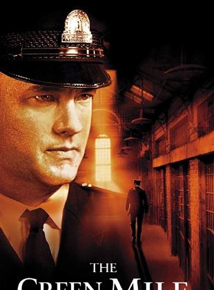

|
Özeti
Esaretin Bedeli, Andy ve Red isimli iki mahkumun parmaklıklar ardında kurdukları dünyanın hikayesini anlatıyor. Andy Dufresne, genç ve başarılı bir bankerdir. Karısını ve karısının sevgilisini öldürmek suçundan yargılanır ve ömür boyu hapis cezası alır. Shawsank Hapishanesi'nde dayak, işkence, tecavüz, her türlü durum ...
Oyuncular:Tim Robbins, Morgan Freeman, Bob Gunton
Yönetmen: Frank Darabond
Süre:2s 20dk
Tür: Dram
|

|
Özeti
Yüzüklerin Efendisi,Kralın Dönüşü, Tek Yüzük'ün yok edilmesi için verilen mücadeleyi konu ediyor. Sauron'un orduları büyüdükçe büyümektedirler. Frodo ve onun can dostu Sam, korku dolu bir yolculuğun göbeğinde, korkunç Mordor'a adım adım yaklaşmaktadırlar. Tek yüzük yok edilmelidir ve iyilik bunun için savaşmaya ...
Oyuncular:Sean Astin, Elijah Wood, Viggo Mortensen
Yönetmen: Peter Jackson
Süre:3s 21dk
Tür: Macera, Fantastik
|
|

|
Özeti
Yeşil Yol,bir hapishane görevlisi ile bir mahkumun öyküsünü anlatıyor. Paul Edgecomb'un hapishanedeki görevi, idama mahkum edilen mahkumları son yolculuklarına uğurlamaktır. Çalıştığı yıllar içerisinde yüzlerce mahkumu idam etmiştir. Bir gün John Coffey isimli korkutucu görünümlü bir adamla tanışır. Ancak Coffey'in bu ...
Oyuncular:Tom Hanks, Michael Clarke Duncan, David Morse
Yönetmen: Frank Darabont
Süre:3s 9dk
Tür: Dedektif, Fantastik
|